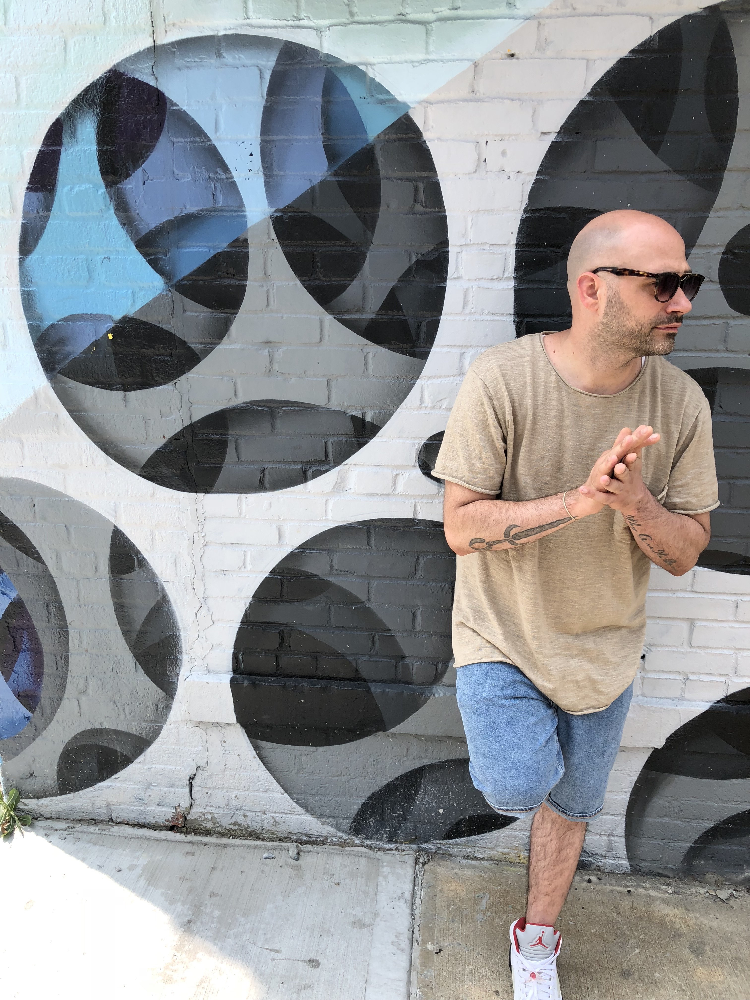
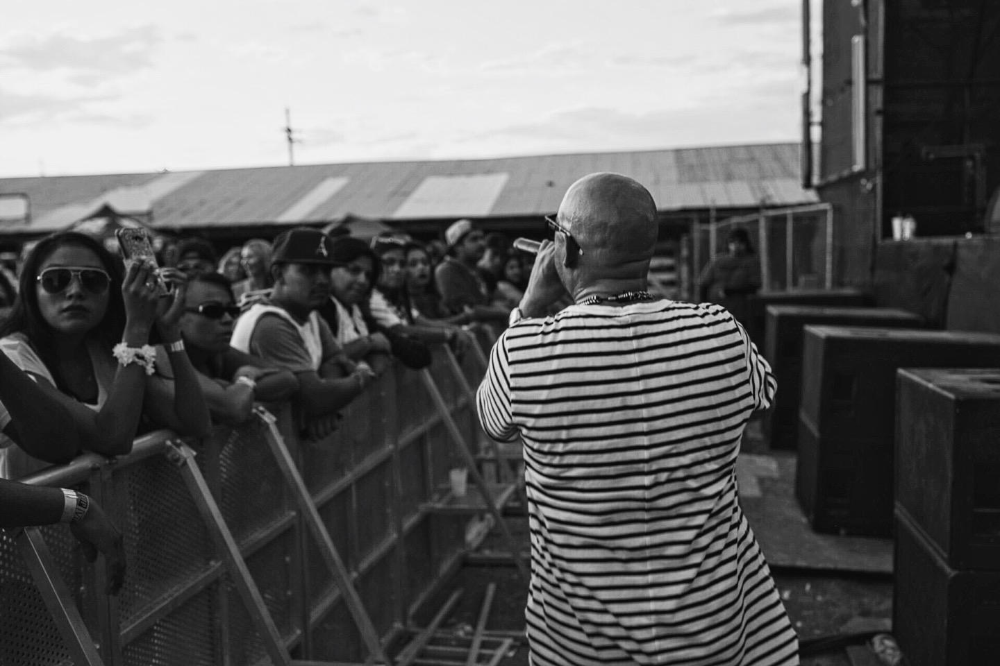

Welcome to D3 Production, where your musical dreams come true.
We are here to serve the music industry, where we link,teach and manage talent.
A.K.A. the First Classhole, is the epitome of hard work and dedication. The 3 time HMMA nominated recording artist is set to take the music business by storm! Since the licensing his single “Fade Away” in 2012, as the theme music to Top Selling iPhone game CSR Racing, Kritikal’s career has been in high gear!.
Kritikal has performed all across the United States. From the bright lights of his hometown of New York City, to the middle of the Pacific Ocean in Honolulu. Kritikal has also had busy performance schedules at numerous SXSW’s in Austin, TX. Music licensing has been able to set Kritikal apart from the pack of independent artists & some major label artists as well, with placements on major network TV shows such as Comedy Central’s Workaholics, TNT’s Franklin and Bash, MTV’s Pimp My Ride and several others.